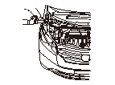

冷却水漏れの点検
専用工具
ラジエータ キャップ テスタ アダプタ ACKER-GP0-0110*
*専用指定市販工具
点検はエンジンが冷えているときに行う。
冷却水を口元いっぱいまで補充する。
ラジエータ キャップ口にラジエータ キャップ テスタ（A）を取付ける。
テスタで正規圧力値までポンプ アップして水漏れの有無を確認する。
正規圧力:
93－123kPa(0.95－1.25kgf/cm
2
)
•
短時間で圧力が低下する場合は、テスタの取付けが悪いか水漏れしている。
•
エンジン オイルと冷却水との混じりがないことを点検する。
-
オイルが混じっている場合はエンジンのシール不良。
•
冷却水とトランスミッション フルードとの混じりがないことを点検する。
-
トランスミッション フルードが混じっている場合は、ATFクーラの不良。

 点検はエンジンが冷えているときに行う。
点検はエンジンが冷えているときに行う。